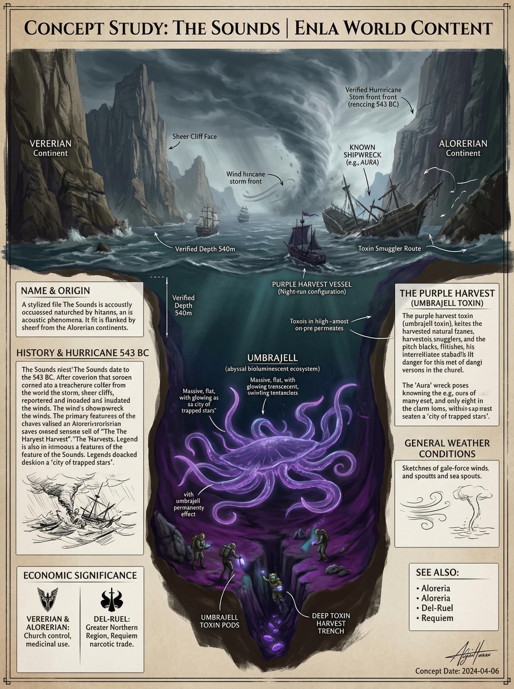
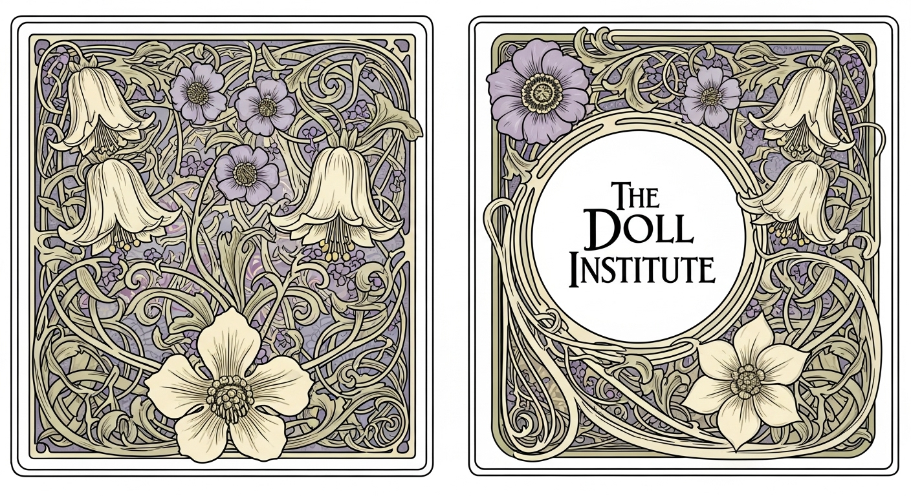
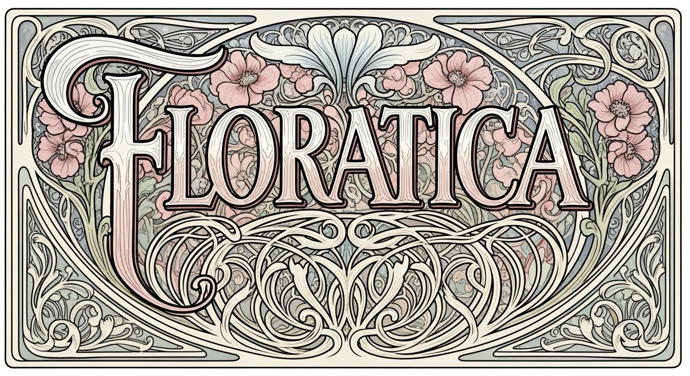
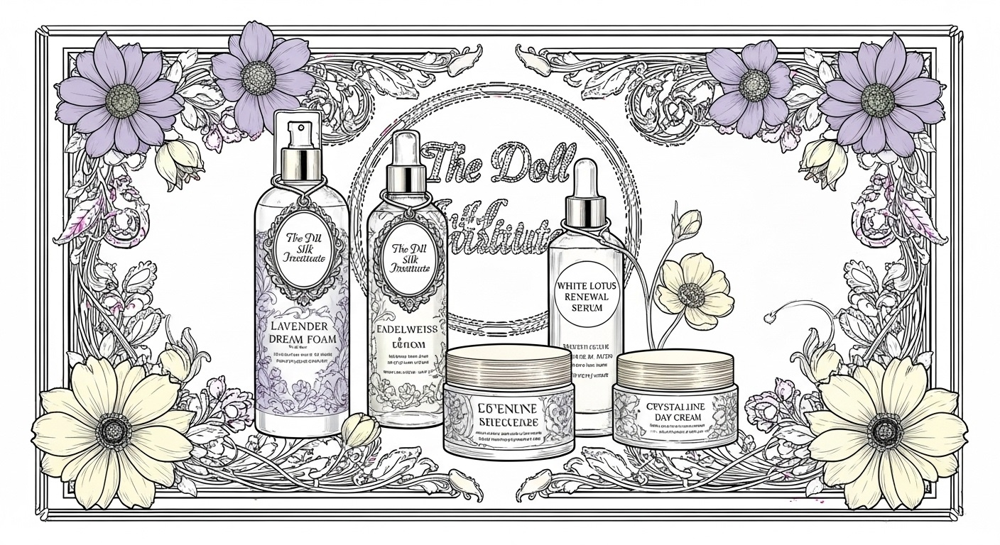
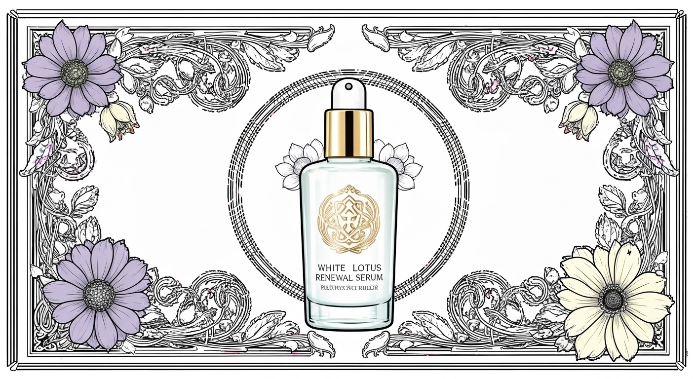
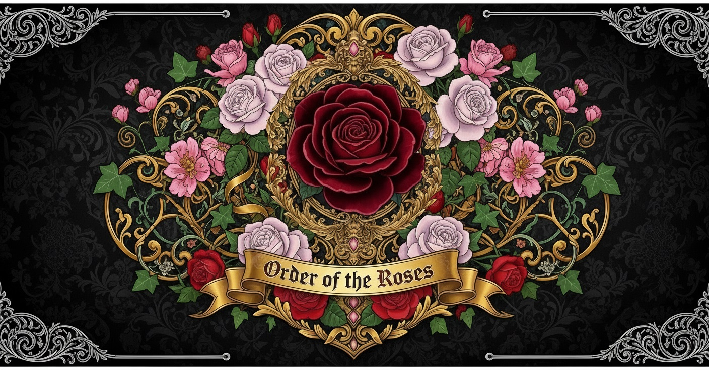
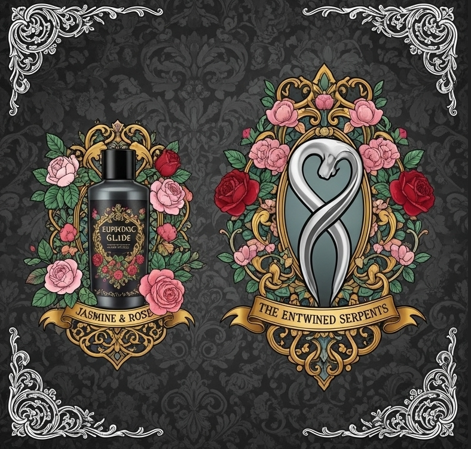
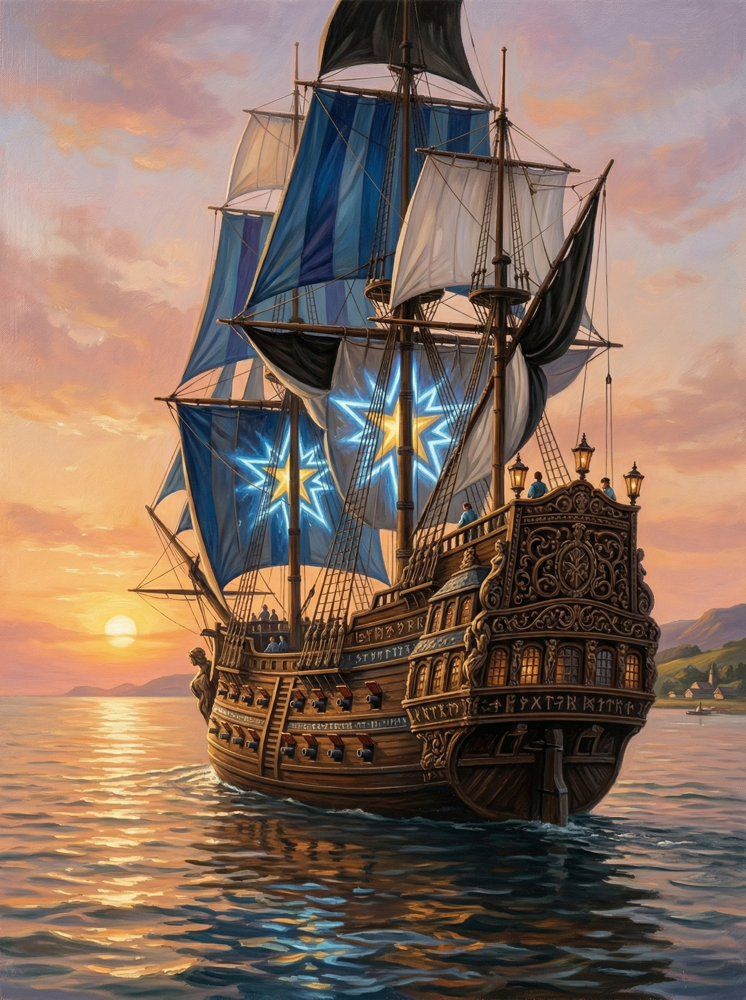

Enla is a world of stark contrasts and fragile balance. In the north, two conservative kingdoms — Aloreria and Vererian — stand united under the rigid doctrines of the High Church of the Sixx, clinging to tradition, moral purity, and the memory of The Hush, the ancient cataclysm that nearly silenced all life. To the south lies Del-Ruel, a vibrant, libertine nation where creativity, sensuality, and technological innovation thrive through the power of Mana and its advanced successor, FLOWtech.
Divided by the treacherous maritime channel known as The Sounds, these realms represent opposing philosophies: the north’s emphasis on order, piety, and communal sacrifice versus the south’s celebration of personal freedom, artistic expression, and the belief that sexual and creative energy are one and the same. Yet both sides share a common fear — that imbalance could once again awaken the whispering darkness of The Hush.
This archive is your gateway into the living world of Enla. Explore the cultures, technologies, faiths, and forbidden pleasures that define its people. Delve into the histories of its nations, the secrets of its guilds, and the quiet dangers that still linger beneath the surface. The Archives of Enla are constantly growing — new articles and stories will be added as the world expands.
The Archives of Enla — Journey into the forbidden.
The Sounds
The Sounds is a wide channel of water that separates the continents of Vererian and Aloreria. This body of water serves as a major geographical and strategic boundary in the Great Northern Region. It connects eastward to the Southern Sea and is home to Aloreria's primary harbour, Port Cicila.
The depths of The Sounds are notoriously uncharted; not only due to its historically recorded depths but also because its dark, cold abysses are the exclusive natural habitat of the Umbrajell. This creature and the potent toxin that it produces make the channel a vital, contested resource for the surrounding nations.
Name and Origin
The channel gets its name from a unique acoustic phenomenon. It is flanked by large, towering, sheer cliffs on both the Vererian and Alorerian sides. Gusts of winds funnel through this channel at high speeds, hitting the cliffs and countless sea caves in a way that produces a constant, low or high-pitched moaning whistle. During storms, this "singing" becomes a deafening roar that echoes for miles.
History
The first documented event of The Sounds dates back to the year 543 BC, when a treacherous hurricane ripped through the channel. The storm spanned for miles and affected both the Alorerian and Vererian coastlines. This cataclysmic event, documented as "The Roaring Tempest," is recorded within the chronicles of the High Church of the Sixx. Scribes of the era wrote that the channel's signature, high-pitched "singing" escalated into a "deafening roar that echoed for miles", a sound that was heard as far as the inlands.
The winds, funnelled between the towering, sheer cliffs of the two continents, reportedly shattered stone and inundated the sea caves. The storm brought destruction to anything within its path, leaving a path of shipwrecks and ruins in its wake. Splintered wood and twisted metal litter the channel bed as grim reminders of its fury.
The most famous shipwreck is the Aura, the largest known Alorerian luxury vessel that vanished during the storm. Decades later, treasure hunters around the world search for the remains — yet it has never been found.
The Sounds is also infamous as a harvesting ground for black-market smugglers. Legends among sailors tell of "The Purple Harvest," a perilous night-run into the abyss by Del-Ruelian ships seeking the Umbrajell toxin. This toxin is a key ingredient for the potent narcotic Requiem. These smugglers navigated the pitch-black depths by the eerie, bioluminescent glow of the Umbrajells' tentacles, which they described as looking down upon a "city of trapped stars". They risked not only the creatures themselves but also interception by Vererian or Alorerian patrols, as they dredged the deep, permanently purple-stained trenches for the valuable pods.

General Weather Conditions
Windy, gusty winds, random squalls.
Economic and Cultural Significance
Control of The Sounds is economically vital due to the Umbrajell toxin. The resource has starkly different applications depending on cultural values.
Vererian & Aloreria: Under the governance of the church, the harvested toxin is strictly regulated and only processed by licensed apothecaries. It is primarily used to create powerful medicines used to combat severe pain, but can also be synthesized into vibrant purple dyes.
Del-Ruel: In Del-Ruel, the toxin is manufactured and consumed in the same way as most of the Greater Northern Region, with the exception that it is recognized as a powerful narcotic used in illicit drug trades. It is a key ingredient in the manufacturing of Requiem, a potent and dangerous drug.
The Hush is not merely a region — it is a catastrophic divine curse unleashed by the angry gods upon Enla. It envelops vast swathes of the continent in an eternal, frozen silence and stasis, locking half the world in time.
A World Frozen in Stillness
Vast forests, towering mountains, and winding coastlines lie locked in an uncanny, perfect stillness. Birds hang motionless mid-flight, rivers are suspended mid-flow, and people are trapped forever in the middle of everyday actions — their faces frozen in expressions of ordinary daily life. No sound can escape The Hush. Even the wind dies at its border. Once all life within is claimed, a thick, impenetrable fog slowly grows and consumes the land.
The dense, unnatural fog that slowly consumes everything within The Hush
The Effects of The Hush
Anything or anyone that crosses the border is gradually frozen — unaging, unyielding, and utterly silent. There is no escape, no sound, and no passage of time. While the cursed remain eternally preserved in their final moment, the world outside continues to move, evolve, and forget them.
The Shifting Border
The boundary of The Hush is unstable and shifts unpredictably, sometimes claiming new land without warning. The High Church of the Sixx teaches that these movements are signs of the gods’ lingering wrath — a constant reminder of humanity’s past sins.
To the northern nations, particularly Vererian and Aloreria, The Hush is both a sacred scar and a powerful moral warning. The High Church uses it as divine proof that moral decay and southern indulgence could awaken the gods’ fury once more. In contrast, southern nations like Del-Ruel view The Hush with a mixture of fear and scholarly curiosity, studying its edges for clues about Mana and the nature of time itself.
The Hush remains the greatest fracture in Enla — a physical, cultural, and spiritual divide that continues to shape politics, faith, myths, and the daily lives of those who live near its ever-changing border.
Nestled in the northeastern highlands of Aloreria, Adamire stands as a beacon of knowledge and discipline, far removed from the southern threats of The Hush. This prestigious city is home to the Royal Academy of Wynn, a revered institution celebrated across the continent for its advanced studies in humanities, culture, and sciences, as briefly noted in the main manuscript of Del-Ruel. Alongside its academic prowess, Adamire serves as the headquarters for The Royal Alorerian Border Patrol Academy and The Grand Watchtower of The Divine Sixx, blending intellectual pursuit with military vigilance and religious devotion. Surrounded by rolling hills, clear rivers, and misty valleys, Adamire embodies Aloreria's opulent conservatism, tempered by the High Church's influence and the subtle decay of royal neglect.
Geography and Atmosphere
Perched atop a plateau overlooking a winding river that carves through lush woodlands, Adamire enjoys a temperate climate with crisp breezes and occasional mists that enhance its mystical allure. The city’s elevated position offers panoramic views of the Silent Sea to the east and Mount Raan to the south, providing a strategic yet serene setting. The landscape is dotted with ancient oaks and terraced gardens, though some areas show signs of overgrowth and neglect, reflecting the economic strain from King Elif-Laurie’s greed.
Cultural Essence
Adamire’s culture is a fusion of scholarly rigor, pious restraint, and military discipline, deeply influenced by the High Church of the Sixx. The city’s inhabitants, from elite academics to border trainees, adhere to Alorerian opulent conservatism in fashion—high-necked robes and dresses crafted from embroidered silks, designed to display wealth while enforcing modesty. This "gilded bars" style, with its delicate floral embellishments, contrasts with the more libertine aesthetics of Del-Ruel, earning it a "frumpy" reputation among outsiders. Annual Wynn Vigil Festivals celebrate intellectual achievements and border preparedness with modest processions and herbal feasts, though underground circles whisper of reform inspired by the missing Queen Rhys-Roberts’ scholarly ties.
Key Institutions
The Royal Academy of Wynn: This marble-spired citadel is the heart of Adamire, offering elite education in philosophy, history, literature, arts, folklore, linguistics, medicine, botany, and astronomy—restricted to manual methods per Church edicts. Its Great Hall, adorned with Sixx murals and gem-inlaid desks, hosts vibrant debates, while the Forbidden Archives guard censored mana lore, hinting at forbidden knowledge sought by Del-Ruel protagonists.
The Royal Alorerian Border Patrol Academy: Located on the city’s outskirts, this fortified complex trains southern patrol units with archery ranges and strategy halls. Opulent officer quarters contrast with weathered trainee dorms, symbolizing the city’s dual nature.
The Grand Watchtower of The Divine Sixx: A towering structure with a gold-leafed observatory dome, it serves as a spiritual and surveillance hub, its runes-etched walls offering distant oversight of Aloreria’s borders. Pilgrims ascend for divine vistas, though its outer steps show cracks from underfunding.
Adamire’s economy thrives on education, military training, and Church pilgrimage, with noble tuitions, manuscript sales, and patrol subsidies driving wealth. Highland farms yield fruits, grains, and herbs, traded to Bisk and ports, while artisans craft literature bindings and patrol gear. However, royal siphoning of funds leads to delayed salaries and decaying infrastructure, fostering resentment among commoners and trainees alike.
Landmarks and Decay
The city’s opulent core—marble spires, oak courtyards, and gold-accented towers—contrasts with outer districts where cracked walls, weathered targets, and overgrown gardens reveal neglect. The river, once pristine, bears subtle pollution from upstream farms, a silent testament to the kingdom’s faltering stewardship.
The Living City
Adamire buzzes with the sounds of quill scratches, patrol drills, and Watchtower hymns, its air scented with ink and pine. Scholars in silk robes pass laborers in patched attire, fueling tensions that simmer beneath the surface. Whispers of rebellion against the king’s avarice grow, with the queen’s legacy as a catalyst for change, making Adamire a city of both enlightenment and unrest.
The Silent Sea is a vast, stagnant body of water located in the Greater Northern Region, situated between the eastern coast of Aloreria and the landmass known as The Wonders. This treacherous sea is a direct and lingering consequence of The Hush, the silencing fog unleashed by the Gods as divine retribution.
Its eerie stillness, perpetual dense fog, and hazardous conditions make it a place of dread and a powerful symbol of the gods’ lingering curse. Characterized by its complete lack of wind and currents, the Silent Sea is currently the largest body of unmoving water in the region. However, there have been reports of similar environmental changes beginning to happen in the south-eastern region of the Southern Sea.
Geographical and Environmental Characteristics
The defining feature of the Silent Sea is its profound stillness. Heavily affected by the encroaching power of The Hush before the curse was halted, the region is devoid of any wind, leaving the water’s surface unnervingly placid. The climate is oppressively warm and humid, and a thick, disorienting fog almost always blankets the water, making navigation exceptionally dangerous.
The constant decay of its unique ecosystem, combined with the heat, produces an extremely foul and pervasive odor that hangs heavy in the air. Due to these treacherous conditions and the overwhelming stench, most travelers avoid the region entirely.
Travel Across the Silent Sea
Travel across this sea is a monumental undertaking. With no winds to power sails, vessels must be manually rowed, turning any voyage into an arduous and lengthy journey. This primitive mode of travel stands in stark contrast to the advanced FLOWtech-powered ships used in nations like Del-Ruel.
A Unique and Deadly Ecosystem
The sea’s deep, stagnant waters have cultivated a bizarre and lethal ecosystem. The lack of movement and warm temperatures create a cycle of rapid growth and decay for its diverse lifeforms. This process has two significant consequences:
Giant Leeches: The waters are infested with monstrous leeches that can reportedly grow up to 20 feet in length. These creatures are a primary threat to any who dare to cross the sea, capable of attacking small rowing boats.
Mold Islands: The constant decay of organic matter has led to the formation of immense mold colonies on the water’s surface. Some of these growths are so large and dense that they form small, unstable islands, contributing to the sea’s hazardous and alien landscape.
For the devout followers of the High Church of the Sixx in Aloreria and Vererian, the Silent Sea serves as a terrifying and sacred reminder of what happens when faith is lost. It is seen as a cursed, forbidden zone — a wound upon the world that has not healed since the end of The Hush.
The sea’s foulness has had a direct and devastating impact on the eastern coast of Aloreria. In the years following the halt of The Hush, the stench from the stagnant waters grew progressively worse, forcing the abandonment of numerous harbor and port towns. Villagers complained that the pervasive odor made them physically ill, turning once-thriving coastal communities into desolate ghost towns that now rot on the edge of the silent, stinking waters.
“The oars dipped into the black water, the only sound in a world silenced by gods. The air is poison here. Mold grows like new land, and the leeches are the true leviathans of the deep.”
The Umbrajell is a unique and formidable deep-sea creature native to the lightless depths of The Sounds. These jellyfish-like organisms are primarily known for the potent chemical compounds produced within their anatomy, which have become a cornerstone of various industries across Enla.
Biology and Appearance
The Umbrajell is distinguished by its massive scale and specialized defense mechanisms:
Structure: They closely resemble common jellyfish but have adapted to the crushing pressures of the channel’s depths.
Tentacles: The creature possesses long, ink-black tentacles that can reach lengths of 30 to 40 feet.
Toxin Pods: Scattered along the length of these tentacles are specialized pods that produce a thick, purplish toxin.
Harvesting and Utility
The purplish toxin is a highly sought-after resource, though harvesting it from the turbulent, pillar-filled waters of The Sounds is exceptionally dangerous.
The Harvest Process
Capture Method: Large cages are lowered into the depths of the channel using miles worth of heavy chains.
Retrieval: Fishermen must pull up these massive lengths of chain to retrieve the cages once an Umbrajell has been ensnared.
Primary Trade Hubs:
Port Mishii (Vererian): Serves as the primary southern hub for the Umbrajell trade.
Port Cicla (Aloreria): The major northern trade point, known for its busy docks and history of naval skirmishes.
Regional Applications
Region/Organization
Primary Use
Application
Vererian & Aloreria
Industrial Dyes
Creating rich, permanent purple pigments for high-status textiles.
High Church of the Sixx
Holy Medicine
Church alchemists refine the toxin into potent analgesics used exclusively for severe illnesses and extreme pain.
Del-Ruel
Narcotic Synthesis
Heavily utilized to synthesize the illicit and highly addictive drug Requiem.
Cultural and Economic Impact
While the northern nations of Aloreria and Vererian treat the toxin as a strictly regulated medicinal and industrial resource, Del-Ruel’s reliance on the Umbrajell for the production of Requiem creates a high-demand black market.
Smugglers and “The Aristocrats” often brave the choppy conditions of The Sounds to transport raw toxin or harvested pods to southern laboratories. This activity frequently draws the attention of the Tribunal of the Sixx, which views the narcotic use of the Umbrajell’s essence as a pathway to spiritual corruption that could invite the return of The Hush.
“When the wind of The Sounds catches the rhythmic clanking of the miles of iron, it adds a metallic discord to the channel’s haunting melodies.”
The 3rd Gender stands as a unique and revered identity exclusive to Del-Ruel, a testament to the nation’s progressive embrace of gender fluidity within its libertine culture. As illuminated in Del-Ruel by The Silent Saria and Del-Ruel: The Side Stories by Sarah E. Adams, this recognition reflects Del-Ruel’s belief that transcending traditional gender binaries enhances personal creativity and societal harmony.
To be acknowledged as a 3rd Gender, an individual must reach the age of 18 and have lived fully as the opposite gender for at least two complete years — a process deeply tied to the nation’s rituals and Mana-infused traditions.
The journey requires a deliberate and transformative embrace of both masculine and feminine energies in equal measure. This path begins with a transition from one gender to another, often spanning several years, guided by cultural mentors and enhanced by sensory experiences like Daze vapor during the Rite of Awakening. This dual transition — first to the opposite gender, then into the 3rd Gender — symbolizes a holistic integration of identity, aligning with Del-Ruel’s philosophy that such balance fuels innovation, as seen in its Mana and FLOWtech advancements.
Formal recognition as a 3rd Gender hinges on meeting stringent federal Del-Ruelian standards, which include completing several surgeries to harmonize physical form with this new identity. A 3rd Gender individual must embody both feminine and masculine traits without bias, transcending the need to favor one over the other. Most view themselves as having surpassed traditional genders, existing simply as themselves — a state of being celebrated in Nullus’s theaters and guildhouses.
Upon this recognition, Del-Ruelians who identified as 3rd Gender officially relinquish their Dual-Gendered Names, adopting a singular name of their choosing to mark their completed transformation.
Cultural Practices and Rituals
The transition process involves communal support, with ceremonies like the Gender Bloom Rite, where Mana crystals illuminate the final naming, marking the individual’s new identity. Training in balancing energies begins early, supported by the monarchy, ensuring a society where the 3rd Gender thrives as a symbol of resilience and creativity.
Societal Role and Challenges
The 3rd Gender plays a vital role in Del-Ruel’s cultural fabric, often serving as mediators or artists who bridge societal divides. However, this identity faces scorn from conservative neighbors like Vererian, complicating trade, while internal debates focus on the physical and emotional toll of surgeries, balanced by the use of Requiem in rare ritual contexts to ease the transition.
“The Sixx made two pillars. The Veilborn are the space between them where the light dances.” — Madam Marionette-Louie, founder of the Doll Institute
The Defiled are those marked by the High Church of the Sixx as spiritually corrupted and permanently severed from divine grace. Once ordinary citizens of Aloreria or Vererian, they are excommunicated for grave violations of the Sixx’s sacred balance—most often through chronic indulgence in Del-Ruelian vices or forbidden substances. They become living warnings, embodiments of the moral decay that once invited The Hush upon Enla.
To be Defiled is a fate worse than death: a social and spiritual death sentence. Families are required to cast them out. Their names are struck from temple rolls. The Church brands them as "Defiled.”
How One Becomes Defiled
The Tribunal of the Sixx investigates any deviation from doctrine. Common paths to defilement include chronic use of proscribed substances (Daze, Requiem, White Crystal, etc.) or illicit contact with the south.
In the cautionary tale The Spiral: The Poisoned Escape, Lyra of Bisk is a typical case. After addiction to “Bliss” (White Crystal laced with Requiem) destroys her life, her husband reports her. She is cast out and branded on the forehead with the Mark of the Defiled — a permanent, crude X burned by the Tribunal.
The Mark of the Defiled
The brand is a hot-iron X formed from a fractured sword (Drakon) crossed with a cracked scale (Vesper), with Lirana’s hearth flame at the center — deliberately snuffed and veined with purple crystal haze. It is placed on the forehead so it can never be hidden. It declares to the world: this soul is silenced and unable to return to the divine upon their death.
Societal Treatment & Daily Realities
Once marked, a Defiled person loses every protection:
Family & Community: Immediate expulsion. Children are taught to regard the parent as spiritually dead.
Employment & Housing: No one may shelter or hire them.
Legal Status: In Vererian they may face ritual throat-binding; in Aloreria they are driven toward the southern border.
“She is no longer one of us. Her voice is silenced, her soul already half-claimed by the fog.” — High Pontiff Valeriax Argon Tricamus
The High Church of the Sixx stands as the supreme governing authority and preeminent religious organization across ENLA, most notably within the Great Northern Region. As the de facto government of Vererian, it commands unwavering devotion and credits its structured societal order with repelling the encroaching threat of The Hush.
Rooted in a hybrid of ancient ascetic traditions reminiscent of disciplined faiths, the High Church of the Sixx enforces strict gender roles and moral values, emphasizing purity, familial duty, and communal sacrifice. Men are often positioned as guardians and providers, while women embody nurturing and spiritual preservation, all under the vigilant eye of the clergy. This rigid framework contrasts sharply with the hedonistic excesses of Del-Ruelian culture, positioning the Church as a bulwark against moral decay. Devotees engage in daily rituals of prayer and service, viewing their roles—from humble acolytes to knightly defenders—as divinely ordained paths to enlightenment. The Church's doctrines promote abstinence from sensory indulgences, decrying substances like Daze and the open sexuality of southern cultures as pathways to spiritual corruption
The Sixx Pantheon
The faith revolves around six divine entities representing the pillars of existence:
Auriel the Illuminator: Wisdom and light.
Thorne the Unyielding: Strength and order.
Lirana the Pure: Family and purity.
Vesper the Just: Law and justice.
Elowen the Bountiful: Nature and harvest.
Drakon the Protector: War and defense.
These deities are invoked through the Church's teachings assert that balance among the Sixx ensures prosperity, while imbalance invites calamities like The Hush, a historical cataclysm described as a whispering darkness that silences thought and life, repelled through collective prayer and martial vigilance centuries ago.
Foundations And Orgins
Established over a millennium ago in the shadowed halls of Vererian's ancient citadels, the High Church of the Sixx arose from a coalition of seers and warriors who united against The Hush's initial incursions. Historical accounts depict the founding as a divine revelation to the first High Pontiff, where the Sixx manifested in visions to bestow the sacred doctrines. In Vererian, the Church swiftly integrated with the royal family, assuming primary governmental duties such as lawmaking and taxation, while Aloreria's monarchy adopted it as a spiritual advisor, embedding its principles into noble education and courtly life. This expansion solidified the Church's role in repelling The Hush, transforming border skirmishes into holy crusades that defined the Great Northern Region's resilient identity.
Hierarchy and Orders
At the apex stands the High Pontiff, elected for life to embody Thorne’s unyielding strength. The Church extends its reach through specialized orders:
The Sixx of Knights: A male martial order patrolling borders against heretical incursions.
The Lirana Sisters: A female monastic group managing sanctuaries for moral education and orphan care.
Auriel Scribes: Scholars dedicated to preserving doctrine and investigating heresy.
Role Across ENLA Regions
The Church's influence varies by region, reflecting ENLA's diverse cultural landscape. In Vererian, it serves as the supreme authority, with House Verathor executing policies under its guidance. In Aloreria, it reigns as the #1 religion, deeply embedded in society—noble families like those of Tessa, Elisa, and Marie (as depicted in the narratives) uphold its conservative values, shunning southern indulgences and viewing substances like Daze as taboo. The Church maintains jurisdictions in select areas, such as border enclaves and missionary outposts, where it enforces moral codes and provides welfare. In Del-Ruel, its presence is visible but greatly diminished; only about one-third of the population attends services, often in rural or historical sites where remnants of northern influence persist amid the nation's libertine ethos. This reduced role stems from Del-Ruel's cultural resistance, though the Church occasionally launches covert efforts to reclaim devotees and combat "corrupting" elements like the sex trade and narcotics
Handling Heresy
The Tribunal of the Sixx investigates deviations from the faith’s balance. Travel to Del-Ruel is viewed as a grave offense. Tiered punishments include:
Public Penance: Ritual flogging or forced labor for first-time violators.
Excommunication: Marking offenders as "Silenced," invoking social ostracism.
Capital Punishment: In severe Vererian jurisdictions, ritual execution via throat-binding is imposed to maintain divine order[cite: 202, 477].
Proscribed Substances
The Church maintains a list of forbidden narcotics viewed as tools of sensory corruption:
Daze: Euphoric vapor inducing inhibition loss.
Requiem: Potent enhancer risking addiction and mutation.
White Crystal: Substance that amplifies urges to addictive levels.
ManaTech marks the foundational energy source of Del-Ruel, a precursor to the modern FLOWtech that once powered the nation's rise to prominence. As recounted in Del-Ruel by The Silent Saria and Del-Ruel: The Side Stories by Sarah E. Adams, ManaTech emerged from the early alchemical experiments of Del-Ruelian scholars, harnessing the mystical Mana energy through rudimentary crystalline arrays.
Developed centuries ago, ManaTech relied on manually attuned crystals to convert Mana into usable power, fueling early innovations such as the Mana Lamps that lit communal baths and the rudimentary machinery of Nullus's workshops. Its use was often paired with sensory-enhancing substances like Daze, embedding technology into the nation's hedonistic rituals.
Legacy and Decline
Over time, ManaTech's limitations—unstable energy output and high maintenance—prompted its replacement by FLOWtech. Yet, remnants of ManaTech persist in rural areas and historical sites, serving as a nostalgic link to Del-Ruel's past.
"In the dim glow of an ancient Mana Lamp, the first Mistress danced, her movements powered by the fragile energy that birthed Del-Ruel's technological dawn."
"Dolls are simply humans who want to be cared for..." - Master Yuri
Founded in 1902 AC by Madam Marionette-Louie , The Doll Institute marks a pioneering venture in Del-Ruel’s sex trade industry, standing as the first human rental organization of its kind.
Nestled within the vibrant streets of Nullus, this small yet growing organization transforms willing participants into living dolls. The institute’s mission blends care, artistry, and contractual discipline, setting it apart from the repressive norms of Vererian or Alorerian cultures.
The Doll Institute thrives as a cultural and economic entity, supported by guilds like the Order of the Roses. Dolls, when not licensed, engage in training or perform in theaters, honing skills in dance and seduction of ornate, well-lit halls, often enhanced by substances like Purple Flower and Daze. This dual role—care recipient and performer—cements their place in Del-Ruel’s social fabric, though it invites criticism from conservative neighbors who view the practice as criminal and exploitative.
What is a Doll?
A doll is a human who voluntarily enters The Doll Institute, transforming training in poise, voice, and emotional expression. Dolls serve as companions and performers, licensed to owners for mutual care while captivating audiences in theatrical settings. They embody a living art form, designed to evoke care and desire, with gender-fluid identities reflecting Del-Ruel’s progressive norms. Their creation is a collaborative process with institutional guidance.
The allure of becoming a doll lies in the promise of constant love and care, freeing individuals from the burdens of survival. A doll never needs to worry about its next meal or shelter, as its well-being is ensured through a unique licensing system. Owners do not fully own a doll; instead, they are granted a license, bound by strict contracts outlining daily care requirements. Failure to meet these standards results in immediate repossession of the doll, with the owner added to a suspension list. In severe cases, depending on the doll’s condition, criminal charges may be pursued, reflecting the institute’s rigorous oversight.
Dolls that are not rented reside at the institute, refining their skills through daily practice or participating in public performances. They also contribute to training new aspirants, ensuring the institute’s legacy, and assist in producing or maintaining the organization’s standards.

Floratica
In 1916, Madam Marionette created The Doll Institute's first official brand, Floratica, a flora-based skincare line that enhances the dolls’ ethereal beauty and reflects Del-Ruel’s deep connection to natural enhancements.
Floratica: The Official Brand of The Doll Institute

Overview
Floratica is the premier skincare and personal care brand affiliated with The Doll Institute, launched in 1916 by its visionary founder, Madam Marionette-Louie. Conceived as an extension of the Institute's commitment to transforming willing participants into "living Dolls" through opulent care and aesthetic perfection, Floratica specializes in luxurious soaps, shampoos, and skincare products crafted from organic flower extracts sourced from exotic locales across the world of Enla.
In a nation like Del-Ruel—where sexuality and creativity are intertwined, and black-market trades flourish despite international restrictions—Floratica embodies the fusion of natural beauty enhancement with the country's innovative Mana-powered technologies. These products not only pamper the skin but also align with Del-Ruelian beliefs that open sensuality unlocks greater potential, making them staples in Doll training regimens, high-end agencies, and everyday urban life in Nullus.
The brand's name, derived from "flora" (evoking blooming flowers) and "atica" (a nod to artistic elegance), reflects its mission: to harness the earth's floral bounty for transformative self-care. Despite Del-Ruel's isolation, Floratica's ingredients are procured through discreet networks, including underground trades facilitated by organizations like The Aristocrats. This adds an aura of exclusivity, as foreign flowers are rare commodities in a shunned nation.
History
Floratica emerged in 1916 as Madam Marionette-Louie's response to the growing demand for specialized care products within The Doll Institute (established around 1902). [cite_start]Initially developed to maintain the flawless appearance of Dolls—whose contracts emphasize constant love, nourishment, and body modifications—the brand quickly expanded to public retail[cite: 1998]. [cite_start]By the 1920s, as seen in the bustling shopping districts of Nullus (described in tales of newcomers like Lee arriving via train), Floratica products were advertised on vibrant billboards alongside other agency brands like Jasmine & Rose.
Key milestones:
1916: Launch with a signature Larkspur-infused soap line, tested on early Dolls for skin-softening during provocative theater performances.
1920s: Integration of enhanced extraction processes, allowing potent floral essences without degradation.Global scrutiny arose as smuggled samples reached outsiders, fueling debates on Del-Ruel's "debaucherous" culture.
Current Era (1923+): Floratica becomes high-class brand focusing on infusing skincare and cosmetics.
Madam Marionette-Louie, inspired by her own carnival roots and the elegant dances she witnessed as a child, positioned Floratica as more than cosmetics—it's a tool for "unlocking potential," mirroring the Institute's philosophy.
Key Ingredients and Sourcing
Floratica prides itself on organic flowers imported from diverse ENLA regions, often via black-market channels to bypass diplomatic bans. These are processed in Mana-enhanced facilities for maximum potency, ensuring extracts are gentle yet effective.
Flower
Origin
Benefits in Floratica Products
Rose
Alorerian valleys
Antioxidants soothe irritated skin, boost collagen for youthful elasticity; anti-inflammatory for post-modification.
Lavender
Western Del-Ruel villages
Moisturizing and antiseptic; promotes relaxation and healing.
Hibiscus
Tropical islands south of ENLA
Anti-aging properties reduce fine lines; hydrates and brightens, enhancing the "living Doll" glow.
Jasmine
Eastern exotic gardens
Calming aroma balances sebum; soothes sensitive skin, tying into sensual aromatherapy in performances.
Chamomile
Northern meadows (rare imports)
Anti-inflammatory and gentle; calms redness, used in shampoos for silky hair during Rite of Passage.
Lotus
Asian-inspired wetlands (black-market staples)
Purifying and hydrating; symbolizes rebirth, perfect for long-term Doll contracts.
Edelweiss
Mountainous highlands
Protective against environmental damage; rare and luxurious, reserved for premium lines.
Calendula
Widespread fields
Healing wounds and reducing scars; essential for body mod recovery in the Institute.
These ingredients are ethically sourced where possible, with Mana tech accelerating growth in local greenhouses to reduce reliance on risky trades.
Products

Floratica offers a curated range of items, all infused with floral essences and designed for daily rituals that celebrate sensuality. Products are packaged in elegant bottles each with a different Doll name attachment for branding and marketing.
Soaps: Bar and liquid varieties, like the Rose Petal Cleansing Bar (gentle exfoliation with embedded petals) and Lavender Dream Foam.
Shampoos and Conditioners: Floral Infusion Shampoo (hibiscus and jasmine for vibrant, voluminous hair) and Chamomile Silk Conditioner (soothes scalp, enhances shine for theater-ready looks).
Skincare: Lotus Renewal Serum (hydrates and purifies overnight), Edelweiss Protective Cream (shields against Nullus's vibrant but harsh Mana-lit environments), and Calendula Healing Balm (for post-performance recovery).
Special Lines: Doll Exclusive Collection (drug-enhanced formulas with White Crystal traces for euphoria during use) and Travel Kits.
All products are free from harsh synthetics, aligning with Del-Ruel's natural-yet-innovative ethos.

Benefits and Cultural Significance
In Del-Ruel, where embracing sexuality fosters creativity (as in Mana power advancements), Floratica's benefits extend beyond skin-deep. Floral extracts provide hydration, anti-aging, and soothing effects, gentler than chemical alternatives—mirroring real-world inspirations like rose's collagen boost or lavender's relaxation. For Dolls, these ensure "constant care," preventing mistreatment and supporting opulent lifestyles. Culturally, they're integral to the Rite of Passage, where youth learn sensual self-care, and agency trainings, enhancing performances that gain international renown (and scrutiny). Challenges include global sourcing risks amid bans, but this exclusivity boosts appeal. In conservative outsiders' eyes (e.g., Alorerians), Floratica represents Del-Ruel's "debaucherous" allure, often smuggled as souvenirs.
The Order of the Roses

Established in 1774 by Mistress Folium-Lee Egbert, The Order of the Roses stands as one of the most prestigious and enigmatic guilds within the libertine tapestry of Del-Ruel, a high society dedicated to cultivating the finest fledgling Mistresses and Masters within the realm. This ancient organization traces its origins to the early days of the nation’s cultural evolution, when sensual arts began to shape its identity. Nestled in the opulent quarters of Nullus, the guild’s rose-adorned halls are a sanctuary of elegance, where the art of seduction and mastery is honed to perfection, reflecting Del-Ruel’s reverence for sexual expression as a creative and societal force.
Little is publicly known about the inner workings of the Order of the Roses, shrouding it in an aura of mystique that only enhances its prestige. The guild is renowned for its rigorous training programs, which produce the most skilled and licensed Mistresses across Del-Ruel, catering to the elite patrons of theaters, guildhouses, and private estates. These Mistresses, adorned in silks infused with the scent of their signature brand, Jasmine & Rose, embody the pinnacle of sensual artistry, blending physical allure with intellectual prowess. Their services often intertwine with the use of substances like Daze, amplifying the experiences of their clients and reinforcing the guild’s influence in the nation’s cultural and economic spheres.
Aspiring to the coveted role of Head Mistress requires completing the Order’s exhaustive training, a journey that tests endurance, creativity, and mastery over both body and mind[cite: 8]. However, not all who train within the guild’s walls are granted membership; the Order is notoriously selective, admitting only those who demonstrate exceptional talent, loyalty, and alignment with its secretive ethos. This exclusivity ensures that the guild remains a bastion of quality, its members serving as cultural icons who elevate Del-Ruel’s reputation even amidst the scorn of conservative nations like Vererian. The guild’s FLOW-powered training facilities, illuminated by crystalline light, symbolize its fusion of tradition with the nation’s technological vanguard.
Role and Influence
The Order of the Roses plays a pivotal role in Del-Ruel’s society, bridging the gap between the libertine masses and the aristocratic elite. Its Mistresses often act as advisors and entertainers in the courts, influencing policy and morale with their refined presence. The guild’s economic clout is significant, with the Jasmine & Rose brand—featuring perfumes and oils infused with Mana-enhanced floral essences—commanding high prices in markets both local and abroad, despite trade embargoes.
Challenges and Traditions
The guild faces challenges from internal rivalries and the societal risks posed by substances like Requiem, which some Mistresses use to enhance their craft, risking addiction or mutation. Tradition dictates annual rites, such as the Rose Bloom Ceremony, where new Mistresses are initiated under a canopy of Mana-lit roses, reinforcing the guild’s historical ties to Del-Ruel’s founding myths of sensual liberation.
"In the candlelit hall of the Order, she inhaled the heady scent of Jasmine & Rose, her final test looming. The Mana crystals pulsed as she danced, her movements a testament to years of training, securing her place among the elite Mistresses of Del-Ruel."
Established in 1811 as an exclusive luxury brand of the prestigious Order of the Roses, Jasmine & Rose stands as the pinnacle of sensual artistry and technological innovation in Del-Ruel. For over a century, the brand has been synonymous with the nation's core philosophy that "sexual energy is creative energy". More than a mere collection of products, Jasmine & Rose offers instruments of transcendence, blending rare, World-renowned for its exquisite erotic care, the brand's long-term users swear by its stimulating effects.
The Rose's Touch: Skincare & Body Elixirs
The foundation of any sensual experience begins with the canvas of the skin. Jasmine & Rose products are crafted by the Order's own alchemists to prepare the body for heightened states of arousal and connection.
Bloom Revitalizing Body Nectar: This shimmering, Mana-infused body oil is a staple for the licensed Mistresses of the Order. It enhances the skin's natural radiance and increases tactile sensitivity, making every touch more electric.
[cite_start]
Arousal Warming Massage Balm: A rich balm designed for prolonged massage. Infused with spiced rose and a mild euphoric agent derived from Purple Flower, it creates a gentle, spreading warmth that relaxes the muscles and opens the mind to new experiences.
Veil of Roses Complexion Cream: A coveted secret of the Order, this cream creates a flawless, porcelain-like finish on the skin. It is said to contain essence of Whisperweave silk and crushed pearls, providing a look of ethereal beauty that subtly announces one's status.
The Sacred Glide: Personal Lubricants
Jasmine & Rose lubricants are engineered not just for function, but for sensation. Each formula is designed to complement and enhance the body's natural responses.
Silk Petal Lubricant: This best-selling lubricant uses a FLOWtech-enhanced base that subtly matches the user's body temperature, creating a seamless and intensely natural sensation. Its delicate rosewater infusion leaves a faint, alluring scent.
Euphoric Glide: A closely guarded formula, this lubricant contains a synthesized Daze compound that induces a localized state of heightened pleasure and euphoria[cite: 161]. [cite_start]It is a favored tool among Del-Ruel's elite for exploring the outer limits of sensation. Edible Nectar: A collection of exquisitely flavored lubricants, allowing for a complete sensory experience. With flavors like "Candied Rose & Spice," it transforms the body into a canvas for taste as well as touch.

Artisan Instruments: Sexual Mechanisms
In Del-Ruel, sex toys are not crude objects but "mechanisms" of intricate beauty and design. Jasmine & Rose instruments are considered the finest, merging master craftsmanship with advanced FLOWtech.
The Whispering Rose: Carved from polished rosewood with a Mana-crystal tip, this vibrator utilizes a FLOWtech core to emit resonant pulses rather than a simple vibration. These pulses are designed to harmonize with the body's energy, creating a deeper, more holistic climax.
Faceted Jewel Dildos: Each "Jewel" is hand-carved from a single piece of Mana-receptive crystal, chosen for its beauty and energetic properties. Prized by collectors, these instruments are as much a decorative art piece as a tool for pleasure.
The Entwined Serpents: A flexible, programmable couples' toy designed for mutual stimulation. Its internal FLOWtech core can replicate the rhythms of famous Del-Ruelian sensual dances, allowing partners to achieve a synchronized state of ecstasy.
Cultural Significance and Guild Rivalry
Jasmine & Rose is more than a brand; it is a symbol of refined sexuality, renowned and revered by elites nationwide. In the competitive landscape of Nullus's guilds, to use Jasmine & Rose is to choose artistry and mystique over the more public-facing and arguably commercialized endeavors of rivals like The Doll Institute. While other organizations, such as The Doll Institute with its own Floratica brand , may produce their own lines of skincare and accessories, none carry the same weight of history , exclusivity , and quality. The brand is a quiet declaration of one's discerning taste and association with the most elite echelons of Del-Ruelian society.
Aloreria is a wealthy and powerful conservative kingdom in the Great Northern Region of ENLA, located south of Vererian and across the Southern Sea from the libertine nation of Del-Ruel. While it shares a deep religious foundation with the authoritative Vererian, Alorerian society allows slightly more flexibility in daily life and is characterized by a blend of opulent status display and moral restraint under the guidance of the High Church of the Sixx. The kingdom is currently facing internal crises, including the decaying splendor of its capital and growing black-market influences that threaten its pious facade.
Governance: A Monarchy Guided by Faith
Aloreria is ruled as a hereditary monarchy from the Royal City of Bisk. The current ruler is Greater King Elif-Laurie, whose court includes high-ranking Chancellors and the Hand of the King. The monarchy works in close partnership with the High Church of the Sixx, which serves as the kingdom’s primary spiritual advisor rather than its direct governing body (unlike in Vererian). Church doctrines heavily influence noble education, court protocols, and law, embedding strict moral codes while allowing the crown some autonomy in secular matters.
Recent years have seen growing tension: the royal family’s greed has led to neglect of infrastructure and rising discontent among commoners, while an unknown assassin targets the magical bloodline of the Alorerian royals. To protect his daughter, Princess Heleanna-Ivan, King Elif has reportedly begun secret dealings with the Silent Sector pirate league.
Culture and Society: Opulent Conservatism
Alorerian society prizes piety, familial duty, and public displays of wealth tempered by the Church’s emphasis on modesty. Nobles and wealthy merchants favor luxurious yet restrained fashion — high-collared embroidered silks and gowns that display status while concealing the body. This “gilded bars” aesthetic is often viewed as frumpy or overly formal by outsiders from Del-Ruel.
Gender roles are clearly defined but slightly less rigid than in Vererian: men are expected to act as protectors and providers, while women focus on nurturing the family and preserving spiritual purity. Arranged marriages are common among the nobility, and vices such as open sensuality or southern narcotics are officially condemned, though black-market activity persists in certain ports.
Daily life revolves around Church rituals, market days, and familial obligations. In the bustling Royal Market of Bisk, respectable women like Lyra once moved through stalls of spiced breads and fine fabrics, seeking brief respite from domestic burdens — a setting where temptation from northern smugglers can quietly take root.
Notable Locations
Location
Region
Type
Notes
The Royal City of Bisk
Northern Aloreria
Capital City
Heart of governance, home to Castle Bisk and the Grand Church of the Sixx offices. Site of the vibrant Royal Market and growing slums due to royal neglect.
Port Cicilia
Northern Aloreria
Port City
Aloreria’s northernmost port, vital for controlled trade and travel to Vererian across The Sounds.
Concord
Northern Aloreria
Trade Hub
A busy commercial center where merchants and travelers converge.
Adamire
Northern Aloreria
City
A thriving intellectual center home to the Royal Academy of Wynn and the Border Patrol Academy.
Lacklorann
Northern Aloreria
Large Village
A prosperous settlement known for its agricultural output.
Port Lock
Northern Aloreria
Port
A quiet port with significant underhanded black-market activity, often used by smugglers like The Aristocrats.
Village of Lily
Southern Aloreria
Village
A modest southern settlement.
Southern Port of Ziva
Southern Aloreria
Port
Trapped within the lingering influence of The Hush for over 1,000 years; largely abandoned and hazardous.
Port Palmacrest
Southern Aloreria
Port City
A busy eastern port handling southern trade routes.
Noteworthy Places
The Forbidden: A cursed zone still trapped within remnants of The Hush; strictly off-limits and patrolled by Church forces.
Mount Raan: A prominent mountain visible from Adamire, holding both strategic and spiritual significance.
The Wilds: Untamed border regions where heretical elements and smugglers sometimes find refuge.
Geography and Military
Aloreria’s landscape ranges from fertile northern highlands and bustling ports to southern areas scarred by the lingering effects of The Hush. The kingdom maintains naval patrols along The Sounds and the Southern Sea, though its forces suffered a humiliating defeat when King Elif’s fleet attacked the pirate ship The Arcadian at Port Cicilia.
Foreign Relations
Aloreria maintains a hostile stance toward Del-Ruel, enforcing trade embargoes and fortifying its shores against southern “corrupting” influences. Relations with Vererian are cordial but cautious, centered on shared faith. Secret dealings with the Silent Sector pirate league highlight the kingdom’s growing desperation to protect its bloodline and interests.
Vererian is an authoritative and deeply religious nation located in the Great Northern Region of ENLA. Governed by the High Church of the Sixx, its culture is defined by rigid tradition, strict moral purity, and an unyielding social hierarchy. While sharing conservative foundations with its neighbor Aloreria, Vererian enforces its principles with far greater severity and authority, positioning itself as a bastion of order against the libertine influences of southern lands like Del-Ruel.
Simplified outline of Vererian’s geography
Governance: A Divine Theocracy
Vererian operates as a theocracy where the High Church of the Sixx is the supreme governing authority and the de facto government. The nation’s monarchy, the House of Verathor, led by King Thorald Verathor, serves a subordinate role as the Church’s “right hand in governance.” The royal family acts as ceremonial exemplars of piety, executing policies under the direct guidance of the Church. In reality, the Church’s authority is absolute.
Culture and Society: Pious Austerity
Vererian society is built upon strict moral codes and discipline, rooted in ancient traditions designed to prevent another divine curse like The Hush. The culture prizes absolute piety and moral purity, shunning the “sensory excesses” of heathen nations such as Del-Ruel. Vices such as brothels, gossip, smoking, and body modifications are strictly forbidden and harshly criminalized.
Gender roles are more rigidly defined than in Aloreria, with men as absolute protectors and women expected to embody subservience and modesty. Fashion reflects these values, focusing on piety over wealth. Women are mandated to be covered “from head to toe” in rigid, dark-colored wools and linens, with elegant veils or hoods being standard to ensure modesty. A woman’s long, well-kept hair is considered a symbol of virtue and social status.
Notable Locations
Location
Type
Notes
Capital City of Lavian
Capital City
The heart of Vererian’s governance, where the High Church and Monarchy reside.
Port Vermuth
Port City
A northern port, key for naval operations and controlled trade.
Port Mishii
Port City
A southern port facing The Sounds, crucial for travel toward Aloreria.
Port Breeze
Port City
Located on the southeastern coast, a strategic naval outpost.
The Great Forest
Region
A large expanse of dense forest in the northern part of the nation.
Aldus
City/Town
A settlement located south of the Great Forest, near Port Mishii.
Reddenkin
City/Town
Located in the northern plains between the Great Forest and the capital.
The Point
Region
The westernmost peninsula of Vererian.
Geography and Military
Vererian’s history is centered around its fortified urban centers. The High Church of the Sixx was established in 1000 BC within Vererian’s ancient citadels, which remain important religious sites for Hush-repelling ceremonies. The nation maintains a naval presence, with patrols monitoring the Southern Sea.
Foreign Relations
Vererian maintains a policy of staunch isolationism, viewing external influences as corrupting forces. The nation is staunchly opposed to Del-Ruelian culture, which it views as a symbol of moral decay, and all travel and trade are prohibited.
Del-Ruel is the vibrant, libertine nation of the south, a land where creativity, sensuality, and technological innovation are celebrated as one and the same. Ruled by the Rinaldi Monarchy from the glittering Grand City of Nullus, Del-Ruel stands in stark contrast to the rigid piety of the northern kingdoms. Here, Mana and its advanced successor FLOWtech power everything from grand theaters to intimate guildhouses, and the pursuit of personal freedom is seen as the highest form of harmony with the universe.
Governance: The Rinaldi Monarchy
Del-Ruel is ruled by King Finnas Alberto Rinaldi from the opulent capital of Nullus. The monarchy works in close partnership with powerful guilds such as the Order of the Roses and the Doll Institute, allowing a balance between royal authority and cultural innovation. While the north views this system as chaotic, Del-Ruelians see it as the natural expression of freedom and creativity.
Culture and Society: Libertine Harmony
Del-Ruel celebrates personal expression, sensuality, and artistic mastery. The Third Gender (Veilborn) is revered, and many citizens openly embrace the philosophy that sexual and creative energy are inseparable. Fashion is bold and flowing, often enhanced by ManaTech and Floratica elixirs. The nation’s guilds and theaters are the heart of society, where Mistresses, Dolls, and artists push the boundaries of innovation and pleasure.
Notable Locations
Location
Type
Notes
The Grand City of Nullus
Capital City
The glittering heart of Del-Ruel, home to the monarchy, grand theaters, and the most powerful guilds.
Port Amber
Major Port
The primary southern port, bustling with trade, smugglers, and FLOWtech-powered ships.
Obsidian Reach
Mining Town
Far eastern mining settlement famous for harvesting black crystal, a key component in advanced ManaTech.
Luminar
Mining Village
North-western village known for white crystal extraction, used in everything from medicine to euphoric elixirs.
Verdalia
Farming Village
South-western agricultural community supplying exotic flowers for Floratica and other luxury brands.
Goldenfields
Farming Village
Central farming region known for fertile lands and Mana-infused crops.
Geography and Innovation
Del-Ruel’s warm southern climate and abundant Mana sources have allowed it to become the technological leader of Enla. From the bustling docks of Port Amber to the crystal mines of Obsidian Reach and Luminar, the nation harnesses natural resources to fuel FLOWtech advancements that power its libertine lifestyle.
Foreign Relations
Del-Ruel maintains a policy of open trade and cultural exchange, though it faces heavy embargoes and hostility from the northern kingdoms of Aloreria and Vererian. Smugglers and organizations like The Aristocrats frequently move goods (and people) across The Sounds, keeping the black-market economy thriving despite northern restrictions.
The Arcadian stands as the crowning jewel and primary warship of the infamous Silent Sector, a pirate league shrouded in legend and dread across the seas of Enla. This world-renowned vessel is a colossus of the waves — a behemoth as vast as a towering mountain, defying the very laws of gravity itself. Its hull, forged from the darkest enchanted oak and reinforced with rune-etched iron, looms like a floating fortress, so immense that scholars and naval engineers across the continent remain utterly stumped as to how such a leviathan stays afloat.

The star-and-wave emblem of the Silent Sector fluttering defiantly under the sunset
A Ship That Defies Reason
Stretching across the horizon like a living mountain, the Arcadian glides effortlessly through the treacherous currents of The Sounds and the open Southern Sea. No conventional engineering can explain its buoyancy. Some whisper of ancient celestial magic woven into every plank; others claim the sea itself bows to the will of its captain. Whatever the truth, the vessel’s presence alone has caused entire fleets to turn tail before a single cannon is fired.
Armament and Might
Its decks bristle with unmatched artillery — cannons that roar like thunder, capable of reducing entire armadas to splinters in moments. The sails, emblazoned with the star-and-wave emblem of the Silent Sector, cut through gales that would shred lesser vessels. To the conservative kingdoms of the north, the Arcadian is not merely a ship; it is a floating symbol of defiance against the rigid order of the High Church of the Sixx.
The Captain: High Captain Nebulia Higgsloyth
Commanding the Arcadian is the ruthless leader of the Silent Sector herself — High Captain Nebulia Higgsloyth, known across Enla as the Queen of the Seas. A celestial sea elf of ethereal beauty and terrifying presence, Nebulia moves as though she carries the ocean within her. Her hair is the color of the darkest depths, and she smells perpetually of salt and crashing waves. Her cloak billows and crashes like breaking surf even on windless days. In Aloreria her name alone is worth its weight in gold; she is wanted on the highest warrant — dead or alive, in one piece or many.
“Her cloak nearly crashed when it whipped through the wind. She carried the sea with her as she walked — an ethereal being.”
— Survivor of the Battle of Port Cicilia
Notable History & The Port Cicilia Disaster
Five years ago, Greater King Elif-Laurie of Aloreria launched a full naval assault on the Arcadian while it lay at anchor near Port Cicilia. The attack ended in catastrophe: over half the Royal Alorerian fleet was sunk or scattered, and the survivors returned to Bisk in disgrace. The defeat cemented the Silent Sector’s reputation and forced Aloreria to ban all Silent Sector vessels from northern ports under threat of immediate destruction.
Since then, the Arcadian has become the backbone of the black-market routes that smuggle goods, people, and forbidden substances between the conservative north and libertine Del-Ruel, often operating in the hidden coves of The Sounds.
A timeline of key events in the history of Del-Ruel and the world of ENLA.
987 - 999 AC: Calamity: The Hush
Major Event / Disaster
An eternal silence unleashed upon ENLA by the Gods as a curse for humanity's lost faith and arrogance. As civilizations advanced, they mocked the Gods and destroyed temples. In response, the Gods unleashed a dense fog, The Hush, which crept through cities, engulfing everything in its path in complete stillness.
1083 AC: Birth of Finnas Alberto Rinaldi
Milestone / Life
The birth year of the future reigning king, Finnas Alberto Rinaldi.
1123 AC: The Rinaldi Monarchy
Important Event / Construction
The year the Rinaldi Monarchy came into power in Del-Ruel.
1876 AC: The Founding of the Velvet Veil Society
Minor Event / Artistic Creation
The exotic material Whisperweave was discovered, and the Velvet Veil Society was created by designer Elara Von Voss.
1902 AC: The Doll Institute
Important Event / Artistic Creation
Madam Marionette-Louie establishes The Doll Institute, the first organization of its kind within Del-Ruel, changing society with the introduction of living dolls.
1916 AC: Floratica is Branded
Minor Event / Artistic Creation
Madam Marionette creates The Doll Institute's official first brand, Floratica, a flora-based skin care line.
1923 AC: Era of the "Side Story The Doll Institute"
Era Start
This era marks the setting for the side story featuring the dolls Lee and Nora.